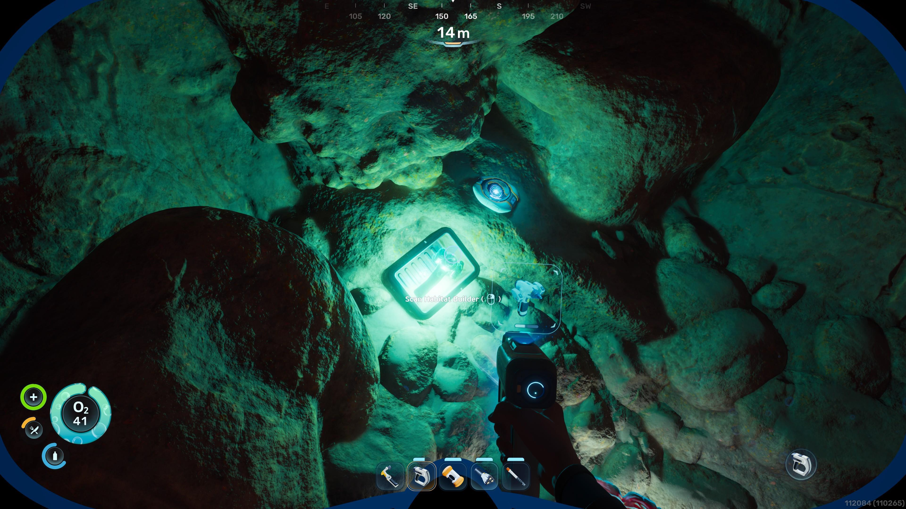
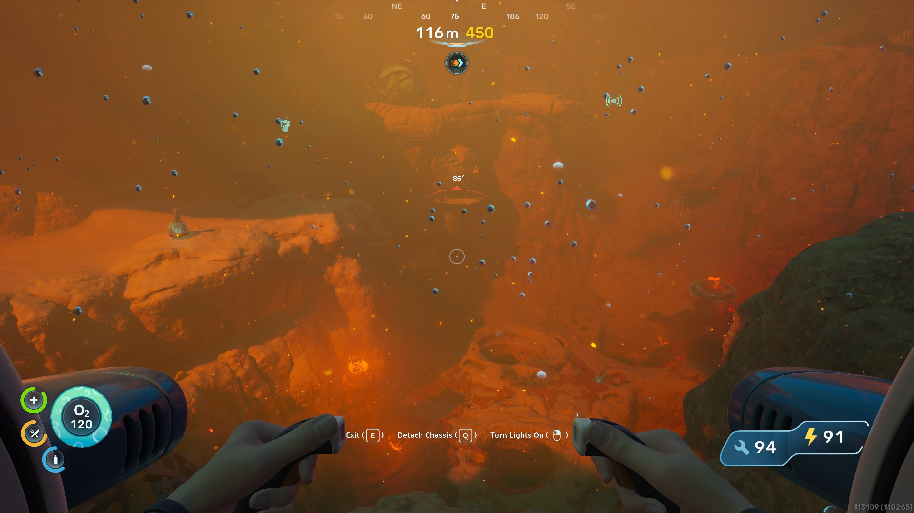
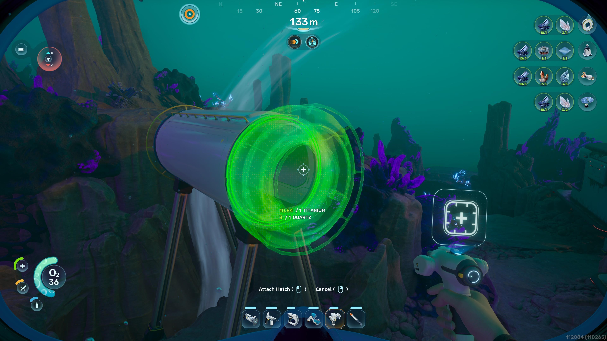
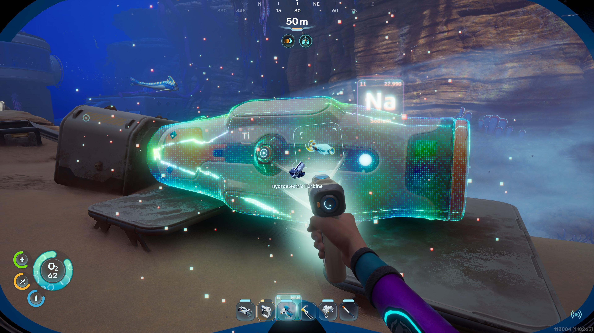
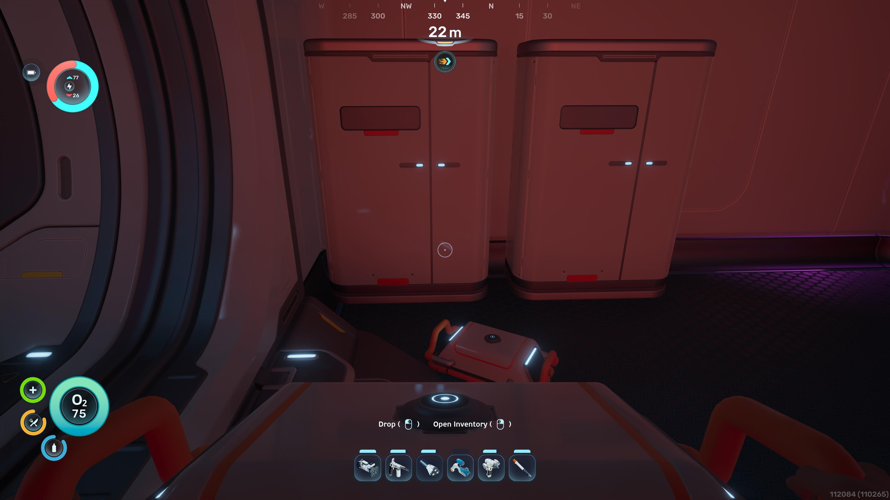
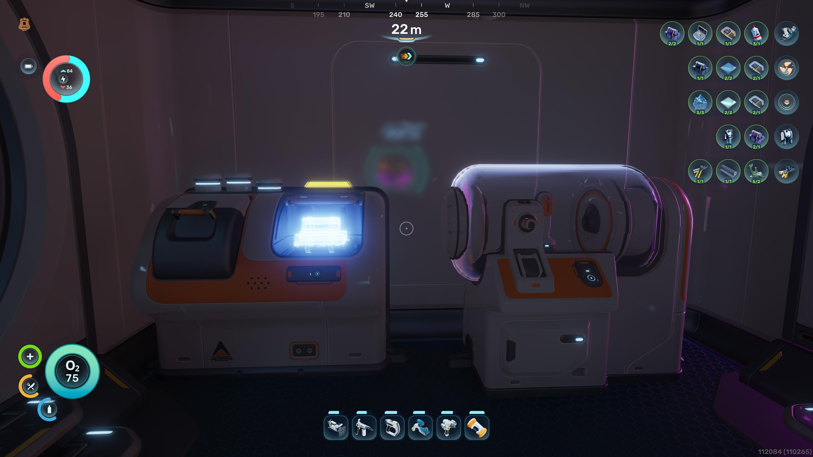
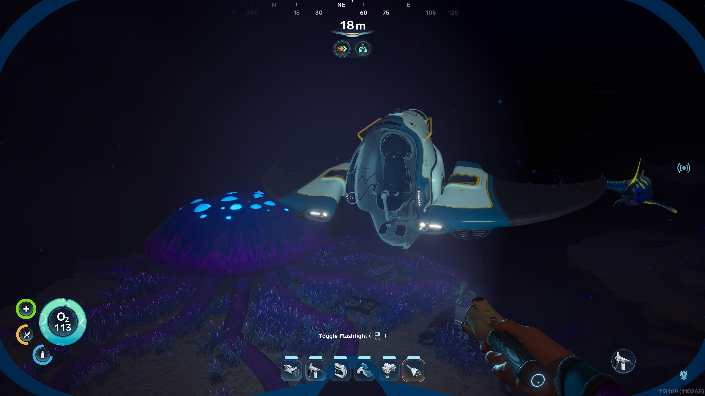
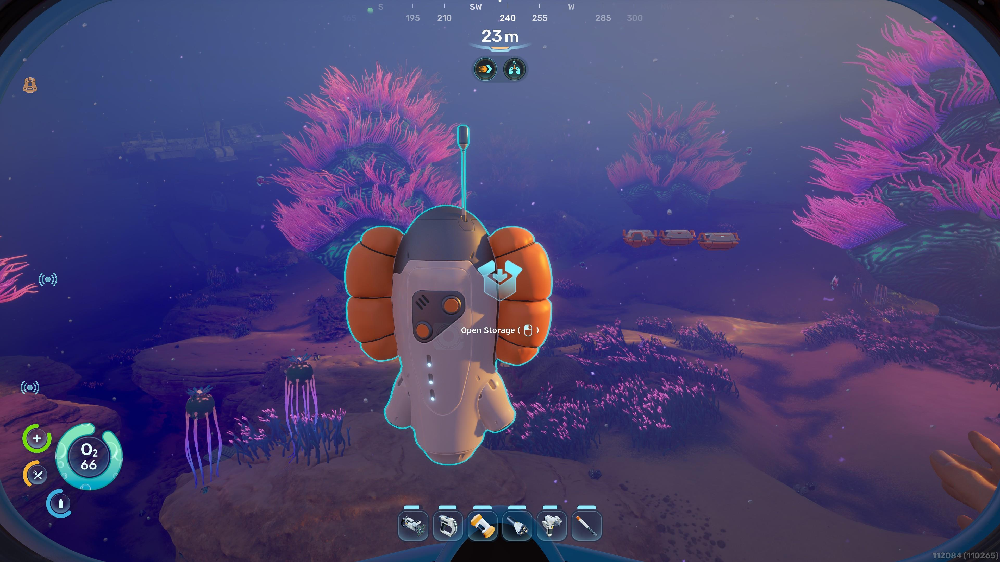

8 tips to build your hab
From the Habitat Builder to power grids and the Tadpole — everything you need to raise a home on Proteus, each step with a screenshot.
Condensed from the official guide
Exact recipes, so you can gather before you build.
1 · Get the Habitat Builder
Scan it in the Welcome Center's small room and other wrecks, then craft: 2 Titanium + 1 Glass + 1 Basic Battery + 1 Copper Wire. Controls: RMB menu · Q deconstruct · F move.


2 · Pick an ideal location
Build away from the Lifepod, on flat open ground, near resources and power — and avoid Leviathan patrols. If it says "under construction," you can't build there.
3 · The basic building blocks
Corridor 2 Titanium · Room 5 Titanium · Hatch 1 Titanium + 1 Quartz. Interior: Fabricator 1 Ti + 1 Copper + 1 Quartz · Biobed 3 Ti + 1 Glass + 1 Copper Wire · NoA Terminal 3 Ti + 1 Copper Wire + 1 Glass.


4 · Generate power
Solar Panel 1 Ti + 2 Quartz (+1–8/s, daytime only). Hydroelectric Turbine 3 Ti + 3 Copper + 3 Silver (+12/s, best long-term — place in currents). Thermal Plant 3 Ti + 3 Copper + 3 Gold. Bioreactor 2 Ti Ingot + 2 Copper Ingot. Link remote generators with Power Transmitters (1 Ti + 1 Copper).
5 · Organize your storage
Wall Locker 2 Ti (20 slots) · Floor Locker 3 Ti + 1 Quartz (30) · Portable Locker 4 Ti (15, attaches to the Tadpole). Locker contents auto-feed crafting — no need to move them to your inventory.


6 · Add useful machines
Scanner Station 3 Ti + 1 System Chip + 1 Wiring Kit · Processor 2 Ti + 1 Mild Acid + 1 Copper Wire · Biolab 3 Ti + 1 Mild Acid + 1 Copper Wire · Battery Terminal 2 Ti + 2 Quartz + 1 Copper Wire · Power Cell Terminal 3 Ti + 3 Copper + 1 Wiring Kit.
7 · Dive deep with the Tadpole
Tadpole Core 2 Ti Ingot + 1 Glass + 1 System Chip + 1 Power Cell · Moonpool 5 Ti · Tadpole Dock 2 Ti Ingot + 1 Silver Ingot + 2 Copper Wire · Vehicle Fabricator 2 Ti Ingot + 1 Copper Ingot + 2 Glass · Modification Station 2 Ti + 2 Celestine + 2 Copper.


8 · Refund & relocate
Pause → Refund Bases to destroy a base and get every material back (locker contents included) in a temporary container. Swim to your new spot first.
Condensed from the official Epic Games base building guide — see About & FAQ. Subnautica 2 is in Early Access; recipes can still change.
Plan & estimate your build
Tick modules to see your base's capability, or tally materials. Piece costs aren't fully public in Early Access — use the SN1 reference as a baseline.
Plan your capability loadout
Tick the modules you intend to build. We summarize what your base will be able to do — not the material bill (piece costs aren't public yet).
Estimate your material haul
Enter how many of each piece you plan, and we tally the raw materials. Rates are editable — fill in costs from your scanned blueprints.
SN1 → SN2 resource conversion hints
Basic ores map 1:1 across both games, so the Load SN1 reference preset is a safe planning baseline for them:
- Titanium, Lead, Quartz, Glass, Copper, Lithium — same name & role in SN1 and SN2.
- Lubricant & Enameled Glass — building consumables present in both titles, but per-piece costs differ; treat SN1 figures as a rough estimate only.
SN2 piece-by-piece building has no published exact costs — always confirm against your own scanned blueprints.
Where the community builds
Player-tested spots from guides and Steam discussions, ordered by progression.
Hydrothermal Vents
~500 m east of the Lifepod, after the Heat Tolerance Adaptation. Thermal Plants at the vents give strong, reliable power.
Crag Canyon Shelf
150–250 m deep. Thermal vents plus lead, silver, and gold — a threat-level 3 area (Ceratehecan and Hound Gar patrols).
Cicada Wreck / Lander Garage
~400 m northeast. Rich in lead plus quartz, copper, and titanium; a nearby wind current powers Hydroelectric Turbines.
Alien Ruins Research Outpost
~1,300 m east, mid-to-late game. Building near the ruins saves repeated trips across the Collector Leviathan's abyss.